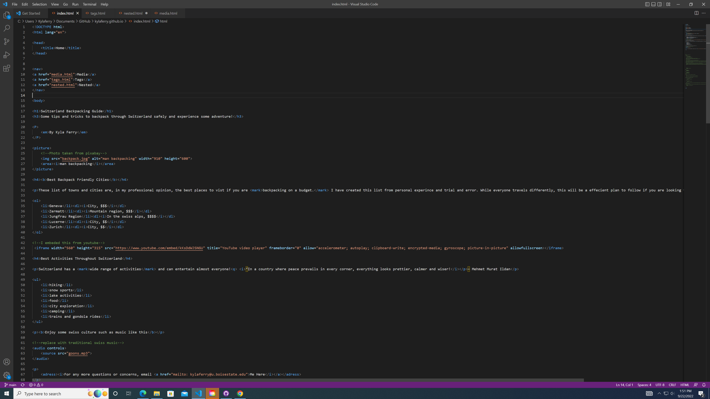
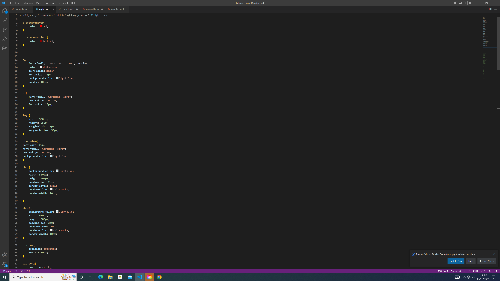

Using the HTML and CSS softwares were definetly the most challanging assignments throughout this media production course. However, with each assignment I became more confident with my coding ability. I know I still have a far way to go but I am proud of how far I have come just throughout this semester. I started with just putting a title on a page to now creating a whole website from scratch. There were times I was frusterated that I couldn't bring my vision to life but in the end it was the most rewarding program to work with. Using CSS to design the website after filling it with content took the most time and effort but it is what brings your website to life. Overall, I really loved learning these new skills and hope I can further develop them in the future. Below are two examples of my HTML and CSS code from earlier in the semester.
 